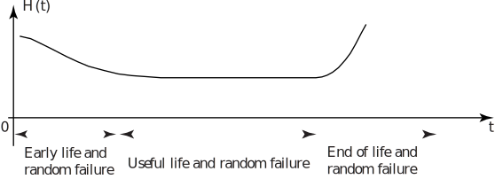

1 Reliability
1.1 Lifetime distributions
From an engineering point of view, the ability to predict the lifetime of a whole system or a system component is very important. Such lifetimes can be predicted using a statistical approach using appropriate distributions. Common examples of structures whose lifetimes we need to know are airframes, bridges, oil rigs and at a simpler, less catastrophic level, system components such as cycle chains, engine timing belts and components of electronic systems such as televisions and computers. If we can develop a lifetime model, we can use it to plan such things as maintenance and part replacement schedules, whole system replacements and reliability testing schedules.
We start by looking at the length of use of a system or component prior to failure (the age prior to failure) and from this develop a definition of reliability. Lifetime distributions are functions of time and may be expressed as probability density functions and so we may write
This represents the probability that the system or component fails anywhere between 0 and .
Key Point 1
The probability that a system or component will fail only after time may be written as
The function is usually called the reliability function.
In practice engineers (and others!) are often interested in the so-called hazard function or conditional failure rate function which gives the probability that a system or component fails after it has been in use for a given time. This function may be defined as
This gives the conditional failure rate function as
Essentially we are describing the rate of failure per unit time for (say) mechanical or electrical components which have already been in service for a given time. A graph of often shows a high initial failure rate followed by a period of relative reliability followed by a period of increasingly high failure rates as a system or component ages. A typical graph (sometimes called a bathtub graph) is shown below.
Figure 1

Note that ‘early life and random failure’ includes failure due to defects being present and that ‘end of life and random failure’ includes failure due to ageing.
The reliability of a system or component may be defined as the probability that the system or component functions for a given time, that is, the probability that it will fail only after the given time. Put another way, is the probability that the system or component is still functioning at time .
1.2 The exponential distribution
We have already met the exponential distribution in the form
However, one of the simplest distributions describing failure is the exponential distribution
where, in this case, is the mean time to failure. One property of this distribution is that the hazard function is a constant independent of time - the ‘good as new’ syndrome mentioned above. To show that the probability of failure is independent of age consider the following.
Hence the reliability (given that the total area under the curve is unity) is
Hence, the hazard function or conditional failure rate function is given by
which is a constant independent of time.
Another way of looking at this is to consider the probability that failure occurs in the interval given that the system is functioning at time . This probability is
This is just the probability that failure occurs in the interval and implies that ageing has no effect on failure. This is sometimes referred to as the ‘good as new syndrome.’
It is worth noting that in the modelling of many complex systems it is assumed that only random component failures are important. This enables us to assume the use of the exponential distribution since initial failures are removed by a ‘running-in’ process and the time to ultimate failure is usually long.
Example 1
The lifetime of a modern low-wattage electronic light bulb is known to be exponentially distributed with a mean of 8000 hours.
Find the proportion of bulbs that may be expected to fail before 7000 hours use.
Solution
We know that and so
Hence and we expect that about 49% of the bulbs will fail before 7000 hours of use.
Task!
A particular electronic device will only function correctly if two essential components both function correctly. The lifetime of the first component is known to be exponentially distributed with a mean of 6000 hours and the lifetime of the second component is known to be exponentially distributed with a mean of 7000 hours. Find the proportion of devices that may be expected to fail before 8000 hours use. State clearly any assumptions you make.
The assumption made is that the components operate independently.
For the first component so that
For the second component so that
The probability that the device will continue to function after 8000 hours use is given by an expression of the form
Hence the probability that the device will continue to function after 8000 hour use is
and we expect just under 92% of the devices to fail before 8000 hours use.
An alternative answer may be obtained more directly by using the reliability function :
The assumption made is that the components operate independently.
For the first component so that
For the second component so that
The probability that the device will continue to function after 8000 hour use is given by
Hence the probability that the device will fail before 8000 hours use is
and we expect just under 92% of the devices to fail before 8000 hours use.